Общие понятия и терминология
- Что такое совместная покупка?
- Это организация оптовой закупки популярной группы товаров. Примеры товаров: одежда, аксессуары, косметика, детские игрушки, бижутерия, парфюмерия и вообще все, что пользуется спросом. Такая покупка выгодна всем – и участникам, имеющим возможность купить товар по цене, ниже рыночной на 20-60%, и организатору, который получает за свою работу 5-30% от оптовой стоимости товара.
- Организатор совместной покупки, кто это?
- Посредник между поставщиком и конечным покупателем (участником покупки), который занимается выбором ассортимента, поиском поставщиков, сбором заказов и оплаты от участников покупки. За свои услуги организатор получает процент (оргпроцент) от закупочной цены товара.
- Участники совместной покупки, кто это?
- Просто покупатели, которые группируются в закупках организатора, выбирают нужные им товары и оплачивают их.
- Что такое rf-sp.ru?
- Группа сайтов совместных покупок. Веб - сервис, имеющий все инструменты для удобства организации совместных покупок как со стороны организаторов, так и со стороны участников .
- Что такое парсер?
- Парсер, в общем понимании – это программа (скрипт, алгоритм действий), которая реализуется на серверной технологии со стороны исполнителя, нацеленная на «выгрузку» необходимых данных с указанного заказчиком, а в данном случае организатором закупки, сайта (каталога, интернет – магазина и т.д.). «Парсить» можно что угодно – товары, новостные ленты, контактные данные и т.д. и т.п. В данном контексте «парсятся» товары каталогов и интернет – магазинов. Поскольку все магазины, да и вообще сайты, разные и вариантов их исполнения бесконечное множество, то для парсинга каждого конкретного сайта разрабатывается свой парсер.
Заказ разработки парсеров
-
Алгоритм заказа
-
Чтобы заказать парсер на разработку, нужно прейти в Личный кабинет -> Организаторская -> Парсеры -> Заказать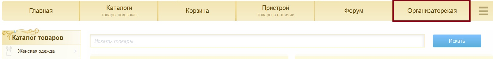 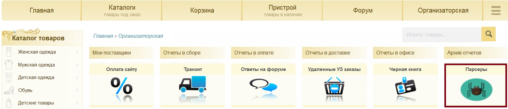 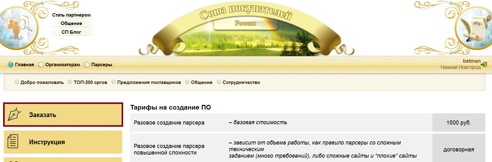
-
Заполнить все поля: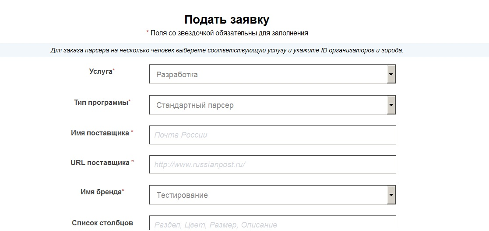
- При заказе убедитесь, что вы указали всю нужную информацию.
- Имя поставщика: не обязательно должно совпадать с названием вашей закупки
- URL поставщика: ссылка на сайт поставщика
- Имя бренда: выбираете из списка всех ваших закупок нужную, к которой будет привязан парсер
- Список столбцов: нужно указать столбцы, которые должны присутствовать в итоговом каталоге (цену СП можно не указывать, так как она рассчитываться автоматически)
- Логин для авторизации на сайте поставщика: указывается в том случае, если для получения оптовых цен или другой нужной информации о товаре требуется авторизация
- Ряды: когда ряды есть не у всех товаров, а только у какой-то определенной группы, всё равно выбирается "Есть". Какие именно товары берутся рядами нужно указать в описании к заказу
- Примерное число товаров на сайте поставщика: если не знаете, ставите прочерк
- Описание: подробная информация о том, какую информацию нужно собирать, какие тонкости нужно учитывать при разработке и пр.
- Контакты для связи: желательно оставить свой e-mail (почту проверяю чаще, чем захожу в скайп)
-
-
Заказ разработки парсера для 2-x(3-x) организаторовДля этого в поле «Услуга» нужно выбрать соответствующий пункт
Покупка парсера
- По данной ссылке находится магазин парсеров, в нем есть все доступные для покупки парсеры
-
Чтобы приобрести нужный парсер в крайней правой колонке есть кнопка «Купить»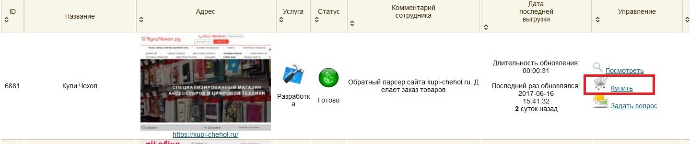
-
Результат работы парсера, который вы хотите приобрести, можно заранее посмотреть нажав на кнопку «Посмотреть» на той же панели, что и «Купить»
-
Так же можно задать вопрос, относительно работы парсера перейдя по соответствующей ссылке «Задать вопрос» на той же панели
Бесплатные парсеры
- На данной странице представлены поставщики, предоставившие доступ к выгрузке своей продукции. Вы можете бесплатно установить себе парсер и начать его использовать для выгрузки продукции к себе на сайт.
- На данной странице вы можете выбрать нужный парсер нажав на кнопку «Получить парсер бесплатно», которая расположена под описанием каждого бесплатного парсера
Работа с парсером
-
Панель управления парсером находится на как на общей странице ваших парсеров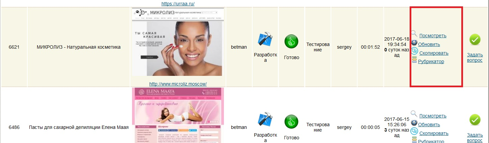Так и непосредственно на странице самого парсера, если на общей панели клинкнуть по кнопке «Задать вопрос»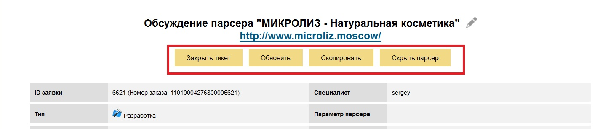
-
После заказа/покупки вами парсера, для загрузки товаров, нужно кликнуть по кнопке «Обновить»Кнопка «Обновить», которая находится напротив каждого из ваших парсеров в их общем списке, а так же на каждой странице конкретного парсера, начинает работу парсера. По завершении работы будет получен новый каталог, который можно посмотреть по нажатии кнопки «Посмотреть».
-
После обновления нужно кликнуть по кнопке «Скопировать»Кнопка «Скопировать», которая находится напротив каждого из ваших парсеров в их общем списке, а так же на каждой странице конкретного парсера, переносит новый каталог в вашу закупку. Все товары, которых нет в новом каталоге, переносятся в раздел скрытые товары, откуда их можно восстановить при необходимости.
-
Загрузка файлов может быть необходима для того, если ваш парсер работает с прайс-листом, который предоставляет к примеру поставщик
-
Осуществляется на странице конкретного парсера с помощью перехода по кнопке в меню Файлы
-
Далее внизу открывшейся страницы нужно нажать кнопку «Обзор» и выбрать нужные файлы для загрузки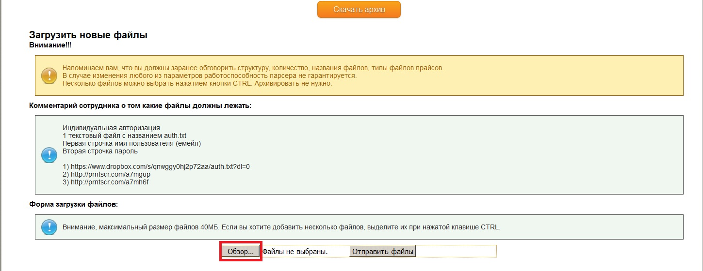
- Вы должны заранее обговорить структуру, количество, названия файлов, типы файлов прайсов. В случае изменения любого из параметров работоспособность парсера не гарантируется. Несколько файлов можно выбрать нажатием кнопки CTRL. Архивировать не нужно.
- Максимальный размер файлов 40МБ. Если вы хотите добавить несколько файлов, выделите их при нажатой клавише CTRL.
-
-
Параметр парсера может быть необходим для изменения в результатах итоговой выгрузки по инициативе организатора. Для ввода (если разработчик открыл доступ для ввода параметра) нужно указать значение в специальном поле в настройках парсера. Поле называется «Параметр парсера». Если формат значения не очевиден, можно задать соответствующий вопрос разработчику.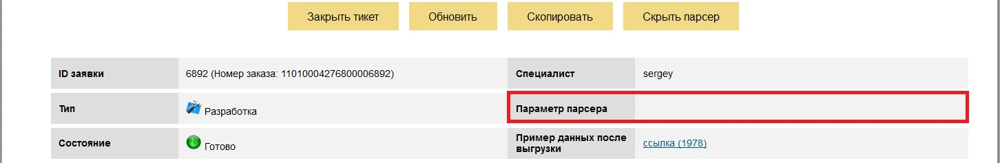
Обращение в службу поддержки
- В случае, если вас что то не устраивает в работе парсера (выгрузились не все поля, не в том виде, неверный формат и т. д.) вы можете обратиться в службу поддержки, кликнув по кнопке «Задать вопрос», которая находится в крайнем правом столбце напротив каждого из ваших парсеров. Далее, внизу страницы вы можете описать возникшую у вас проблему.
- Обязательно убедитесь, что ошибка повторится на следующий день! Ошибка может быть связана с работой сайта поставщика. Каждое новое сообщение отправляет Вас в конец очереди на ответ! Постарайтесь уместить всё в одно-два сообщения, отсчет идет от последнего сообщения.
-
Формат обращения в службу поддержки:
- Подробнейшим образом расписать суть проблемы
- Указать ссылку на товар на сайте rusp.org с которым возникла проблема (если их много, то несколько конкретных)
- Ссылки, соответствующие товарам выше на сайте поставщика
- График работы: Работаем с понедельника по пятницу с 9 до 18 часов. Время ответа на тикет обычно до 3 рабочих дней от вашего последнего сообщения.
Стоимость разработки парсеров
- Разовое создание парсера средней сложности - Цена 1500 руб.
- Разовое создание парсера повышенной сложности (большой объем работы, сложное техническое задание (много требований), «сложные и плохие» сайты — Цена договорная
- Разовое создание парсера, где данные берутся из двух источников - в эту категорию входят практически все парсеры по прайсам например сайт + файл или сайт + сайт, каждый новый источник + 1000 руб. - Цена 2500 руб.
- Разработка одного парсера средней сложности для двух организаторов - формула: (цена парсер - 33%) * 2 - Цена 2000 руб.
- Разработка одного парсера средней сложности для трех организаторов - формула: (цена парсер - 50%) * 3 - Цена 2250 руб.
Доработки парсеров и исправления парсеров
-
Платные доработки парсеров
- Незначительное исправление парсера, связанное с изменением на сайте поставщика или в прайсе - в зависимосто от объема работы - назначается, если поставщик изменил HTML код сайта или структуру прайса - Цена от 200 руб. до 800 руб.
- Исправление парсера, связанное с изменением технического задания - в случае, если в заявке были указаны неполные или неточные данные, чтобы это не допустить, старайтесь оперативно отвечать на вопросы и максимально подробно писать, что именно вам нужно - Цена от 200 руб. до 800 руб.
- Значительное исправление парсера, связанное с кардинальным изменением сайта поставщика – если поставщик изменил сайт более чем на 50%, то парсер пишется заново - Цена 1500 руб. (как разработка нового парсера)
-
Бесплатные доработки парсеров
- Бесплатное исправление ошибок при условии правильного и полного оформления технического задания осуществляется в течении 10 дней после оплаты парсера при условии заказа нового парсера.
- Бесплатного исправления и доработки парсера не предусмотрено, если вы покупается готовый парсер. Все изменения и доработки платные и парсер вы покупаете как есть. Исключения составляет неработоспособность парсера после покупки или в случае если после покупки результат его работы отличается от примера на сайте http://rusp.org
- Бесплатно исправляются ошибки на стороне сервера, при которых парсер не запускается (не путать с ошибками на стороне поставщика).
- Для прайсов, при изменении структуры файла, изменение платное всегда.
Оплата парсера
-
Идете на страницу со списком ваших парсеров
-
Нажимаете на кнопку оплатить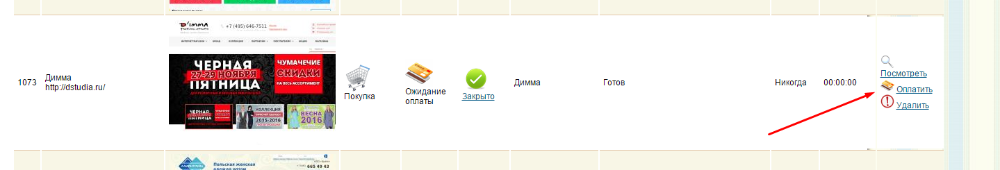
-
Нажимаете на кнопку перейти на сайт банка: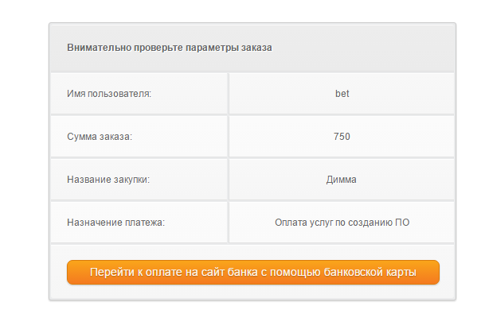
-
Проверяете сумму заказа и правильность указания названия поставщика, и вводите данные банковской карты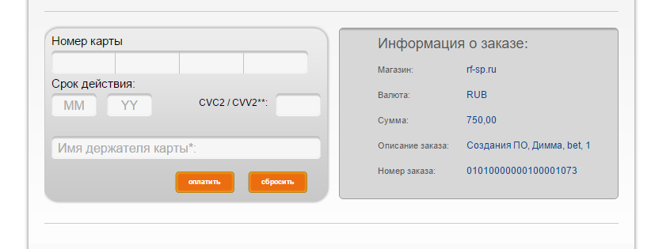
-
Система автоматически включит парсер.
-
Если вам нужен будет для налоговой отчетности акт о выполненных работах, то оплату нужно осуществить через расчетный счет, с карты оформленной вами как юридическое лицо. После этого (а лучше за несколько месяцев перед подачей налоговой декларации) отправить на почту vitaliy@slus.name запрос на акты с указанием всех парсеров за налоговый период и вашего адреса. При оплате через расчетный счет в тикет скопируйте всю информацию о платеже, обработка займет какое то время и производится вручную.